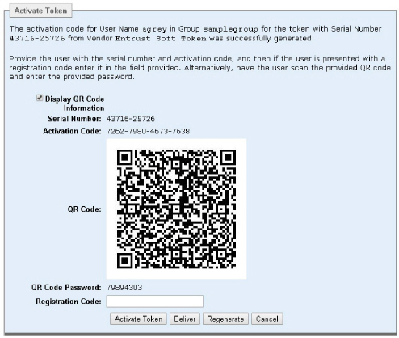
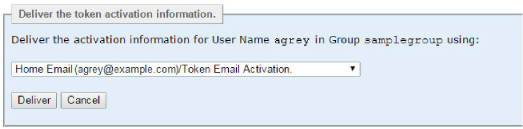

|
IdentityGuard Server 12.0 Administration Guide |
|
IdentityGuard Server 12.0 Administration Guide |
If you do not use Entrust IdentityGuard Self-Service Module, or if users have problems with activating a soft token through self-service, use the following procedures to configure delivery of activation information to users in ways that it can be automatically populated in the soft token. These methods make it easier for users, and eliminate the risk of manual entry errors.
There are a number of ways you can get the activation information into the user’s soft token on a mobile device without entering it manually:
● Scan a QR code in person – Have the user physically present with the administrator or help desk staff to scan the QR code (using the Entrust IdentityGuard Mobile ST app on their mobile device) directly from the Administration interface.
● By email – Send an email to the user with all or some of the following information:
– a QR code and password - Use this option when a user has no internet connection on the mobile device. The user opens the email on a computer and scans the QR code with the mobile device to activate the soft token.
– a link to a URL where the user can activate the soft token
– As a backup method, the email might also include the activation information for manual entry.
– This method requires configuration of a delivery method and, optionally, customization of a message template. See To configure a delivery method for soft token activation information.
– If the user’s mobile device has an internet connection, the user opens the email on a mobile device, clicks the QR code in the email, and then enters the activation password when prompted by the app.
– If the user opens the email on a computer, the user scans the QR code displayed on the computer (using the app on the mobile device), and then enters the activation password when prompted by the app.
● By SMS message – Send the user an SMS message that contains a link to a Web page that completes quick activation. This method requires configuration of a delivery method and, optionally, customization of a message template. See To configure a delivery method for soft token activation information.
Any of these actions enters the serial number and activation code in the app, after which the user can select the Activate button in the app to complete the activation.
To configure a delivery method for soft token activation information
1. Log in to the IdentityGuard Properties Editor as an administrator. See To log in to the Properties Editor.
2. To enable delivery of the online activation link, specify the following settings:
● Web Application Settings
– IdentityGuard Self-Service Activation Address – If you have Self-Service Module in your implementation, enter the URL of the Self-Service Web site. If specified, the value is included in the soft token activation QR Code.
Example address: ssm.example.com:8445/igst
● SMTP Server Configuration.
– Configuration instances – Create a new configuration instance and configure the settings. For information about the settings, see SMTP Server Configuration).
● User Email Delivery Configuration – If you plan to send activation information by email, create a new configuration instance and configure the following settings:
– Email Delivery Configuration Type – Select Token Activate.
– Email Delivery Template File – Specify igsample_email_tokenactivate_template.html or a custom template. The sample email templates are located in $IG_HOME/etc/templates.
– Email Delivery Subject: Specify a subject line like "Activation information for your Mobile Soft Token".
For information about the other settings, see User Email Delivery Configuration
● User SMS Delivery Configuration – If you plan to send activation information by SMS message, create a new configuration instance and configure the following settings:
– SMS Delivery Configuration Type – Select Token Activate.
– SMS Delivery Template File – Specify igsample_sms_tokenactivate_template.txt or a custom template. The sample SMS template is located in $IG_HOME/etc/templates.
Note: The .txt and .html versions of the templates must be located in the same directory.
For information about the other settings, see, User SMS delivery configuration property settings.
3. To enable delivery of activation information in a QR code with a password, in addition to the settings in Step 2, specify the following settings:
● Web Application Settings
– Enable Token Activation using QR Codes – Set to True (the default setting).
● User Email Delivery Configuration
– Email Delivery Enable QR Code Attachment – Set to True.
a. Click Validate & Save.
A confirmation dialog box appears.
b. Click OK to confirm.
4. Restart Entrust IdentityGuard Server service.
5. If required, customize the appropriate delivery message: igsample_email_tokenactivate_template.html or igsample_sms_tokenactivate_template.txt The message templates are located in $IG_HOME/etc/templates.
Note: The .txt and .html versions of the templates must be located in the same directory.
The default email template covers sending activation information in all 3 possible ways: through an online activation link, as a QR code, and full details for manual entry. Remove parts of the email for any method you do not want to use. For example, if you send a QR code, you might want to send the password to use it by another means.
The configuration is complete. Use the activation procedure to create and activate mobile soft tokens through the Administration interface as needed. See To create and activate a soft token using a QR code.
To create and activate a soft token using a QR code
1. Ensure that the user who is requesting the mobile soft token has contact information associated with the configured email or SMS delivery method. See Modifying a user’s contact information.
2. Complete steps Step 1 to Step 6 in the previous procedure (To create and activate a soft token using manual information entry).
3. If you configured Entrust IdentityGuard to send activation information in a QR code (Enable Token Activation using QR Codes in the previous procedure), on the Activate Token screen, select the Display QR Code Information option.

The QR code that contains the serial number, activation code, and (optional) Self-Service address appears.
If you configured the policy to specify an expiry date, it appears beneath the Activation Code. If the QR code expires before the user has time to activate the mobile soft token, click Regenerate to update the QR code.
If you have a delivery method configured and the user has the appropriate contact information, the Deliver button appears.
4. Click Deliver.
The Deliver the token activation information section appears.
If you have more than one delivery configuration (the user has multiple contacts or the system has multiple user delivery configurations) Entrust IdentityGuard presents a list from which you choose the appropriate delivery method.

5. Click Deliver to send the activation information to the user.
The QR code with activation information and the password required to complete the activation are sent to the user, along with any other information in your email template (possibly an online activation link or the activation information for manual entry).
Note: The following steps describe how a user uses a QR code for mobile soft token activation. However, the email or SMS message that you send to the user could also contain the token activation information for manual entry, or a link for automatic online activation (which requires that the mobile device has an internet connection). Steps for these activation methods are not described here.
At this point, the user completes a number of steps:
a. If an email is sent, the user opens the email to display the QR code.
b. On the mobile device on which the Entrust IdentityGuard Mobile ST app is already installed, the user opens the app and, if prompted, enters a PIN. (Users are prompted for a PIN only if they already have at least one soft token in the app.)
c. The user selects the QR Code icon (iOS) or selects Scan QR Code from the menu (Android).
d. The app displays a QR Code scanning screen and the user points the mobile device camera at the computer screen to capture its image in the app.
e. When the app has scanned the QR code, it prompts the user to enter the password delivered with the QR code.
f. The app displays the Activate Identity screen with the values from the QR code filled in.
g. The user selects Activate.
h. If the identity requires a PIN and the application does not already have one configured, the user is prompted to set a PIN.
i. If a transaction URL is specified, the application attempts to complete the registration If automatic registration cannot be completed (because the mobile device does not have an internet connection), the app displays a registration code. The user must convey the registration code to the administrator. This could be done by email, SMS or telephone.
6. If the soft token was not registered automatically, the user must contact you with the registration code. Return to the Activate Token page, enter the registration code, and then click Activate Token.
The token is activated.